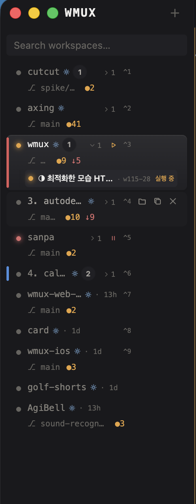

동일한 11개 워크스페이스, 동일한 240px. 오른쪽은 세 가지만 바꿨다: ① amber는 running 한 계열에만, git dirty 수는 muted로 강등 ② 이름 폭 우선 — 톱니·^N·에이전트 수는 선택/호버 시에만 ③ needs-input은 빨간 점 + 행 wash(DESIGN.md가 허용한 유일한 wash), error는 빨간 ✕로 분리. 아래 토글로 "주의 우선 정렬"(Orca Needs You 방식)까지 볼 수 있다.
running
^N
✕
